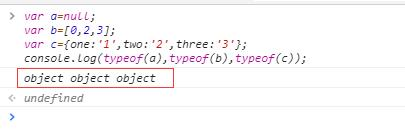
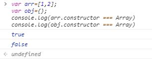

在实际开发中，经常需要检测一个变量的类型，是字符串、数字、布尔还是对象、数组？还是null、undefined？ 对于字符串和数字、布尔这种基本类型，用typeof()来检测就足够了，但是typeof用在数组和对象、null之间就不灵了。

由图中可以看出，变量为null，数组，对象的abc使用typeof检测出来的都是object，没有办法进一步区分。
使用constructor检测

1 | var arr=[1,2]; |
使用instanceof
1 | var arr=[1,2]; |
constructor和instanceof 在iframe下使用时会失效，每个iframe都有一套环境，都有一个window，不共享原型链。
下面的代码取自网络
1 | var iframe = document.createElement('iframe'); //创建iframe |
为什么会出现这样的情况呢？原因就是：在当前窗口引入框架，其实就是引入了window对象，当我们在遍历iframe框架里的变量时使用arr instanceof Array 或者arr.constructor === Array，要注意这个Array是当前window对象的Array，而不是构造出arr的iframe里的window，所以会返回false。
使用toString方法
1 | var arr=[1,2]; |
使用Array.isArray()
ECMAScript5将Array.isArray()正式引入JavaScript，目的就是准确地检测一个值是否为数组。IE9+、 Firefox 4+、Safari 5+、Opera 10.5+和 Chrome都实现了这个方法。但是在IE8之前的版本是不支持的。
综合上述方法，自己封装一个函数
1 | var arr = []; |